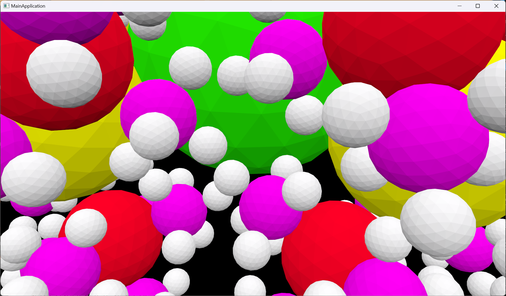

-scene scene.s72 -- Required. Loads the specified scene in .s72 format.-camera name -- Optional. Uses the named camera to view the scene. Aborts if the camera is not found.-physical-device name -- Optional. Selects a physical device with the matching VkPhysicalDeviceProperties::deviceName. Aborts if no match is found. Implementation may vary when not specified.-drawing-size w h -- Optional. Sets window drawable area size in pixels. Aborts if size is not supported. Uses a default size if unspecified.-culling mode -- Optional. Configures culling mode. Additional modes may be supported.-headless events -- Optional. Enables headless mode, using events file for input. Requires -drawing-size.-list-physical-devices -- Optional. Lists all physical devices and exits.-list-instance-extensions -- Optional. Lists Vulkan instance extensions and exits.-measure -- Optional. Activates FPS measurement.My math library, contained within the vkm namespace, provides a comprehensive set of mathematical structures and operations essential for 3D graphics applications. Designed with flexibility and efficiency in mind, it caters to a wide range of mathematical needs within the graphics pipeline.
The core of my math library is the vec template class, representing vectors of arbitrary length (L) and type (T). This design enables the creation of vectors of different dimensions (e.g., vec2, vec3, vec4), all sharing a common base of operations. Each vector class supports basic arithmetic operations, such as addition, subtraction, multiplication, and division, both with other vectors and with scalars.
To complement the vector classes, I implemented a mat template class for matrices, supporting common sizes like mat4 (4x4 matrices) and mat3 (3x3 matrices). These classes are crucial for transformations, projections, and other operations in 3D space, offering functionality for matrix-matrix and matrix-vector multiplication, which are essential for transforming points and vectors in 3D space.
For representing rotations, my library includes a quat class, which facilitates smooth interpolation and avoids the gimbal lock issue associated with Euler angles. Quaternions are extensively used for camera orientations and animated transformations within the scene.
A set of utility functions, such as cross, dot, length, normalize, are provided for vector operations, along with higher-level functions like perspective, lookAt, rotate, scale, and translate for constructing transformation matrices.
I've specialized the vec template for common cases (vec1, vec2, vec3, vec4) to provide convenient accessors (e.g., x, y, z, w) and ensure optimal performance for these frequently used types.
To avoid code duplication and enhance maintainability, my library leverages template programming and inheritance. For instance, all vector operations are defined in a base vec_base class, from which specific vec specializations inherit. This approach allows complex mathematical operations to be implemented once and reused across different vector and matrix types, ensuring code efficiency and ease of maintenance.
The VulkanCore class is based on Vulkan Tutorial principles, encapsulating Vulkan setup, device selection, and swap chain management. Off-screen rendering is added to support rendering without display output, helping benchmark and off-screen compute task and more.
Initial setup includes Vulkan instance creation and logical device selection. The rendering pipeline configures shaders, descriptor sets, and command buffers for efficient graphics processing.
Resources such as buffers and images are managed for optimal performance, ensuring proper allocation, usage, and cleanup.
Debugging and validation layers are integrated for issue identification and resolution during development.
A comprehensive cleanup process is implemented for resource release upon application exit. The off-screen rendering feature allows for rendering operations detached from the display, helping profiling performance.
Scene and mesh data are dynamically loaded from JSON files, utilizing a custom parser to interpret scene structure, geometry, materials, and other attributes essential for rendering.
Upon application startup, the MainApplication::Startup function initiates scene loading through Scene::loadSceneFromFile. This method constructs a Scene object, storing mesh data, textures, and scene hierarchy as defined in the specified JSON file.
The JSON parsing is handled by Utility::json::JsonValue and related classes, which support parsing JSON strings and files into a structured format. These classes offer functionality to deserialize JSON into native C++ structures, enabling easy access to scene parameters and attributes. The parser supports various data types, including strings, numbers, objects, and arrays, providing flexibility in defining scene elements.
Robust error handling ensures that parsing errors, such as unexpected tokens or type mismatches, are caught and reported, facilitating debugging and scene file correction.
The rendering process in my application involves calculating camera transformations to accurately represent scene perspective and conveying transformation and vertex data to shaders for rendering.
Camera transformations are computed using two primary camera types: SceneCamera and UserCamera. For SceneCamera, the view matrix is derived by traversing the scene hierarchy and accumulating transformations. In contrast, UserCamera employs a straightforward approach using the vkm::lookAt function, providing a dynamic viewpoint controlled by user inputs.
The VulkanCore::updateUniformBuffer function updates uniform buffers with the latest camera matrices for each frame. These buffers, mapped to shader uniform variables, ensure that vertex shader receives up-to-date view and projection matrices, enabling the correct transformation of scene geometry based on the active camera's perspective.
Below is a screenshot showcasing an example scene rendered by the viewer:
My application offers dynamic camera controls for interactive scene exploration and debugging, utilizing both user-controlled and scene defined camera movements.
My application features a robust event system designed to manage user inputs and system events. The IApp::RegisterEventHandler and IApp::RemoveEventHandler provide mechanisms for event handler registering & deregistering, allowing various components of the application to subscribe to specific event types (e.g., keyboard, mouse) by providing a callback function.
The MainApplication::ProcessEvents method is responsible for processing the event queue. For each event, it retrieves the list of handlers registered for the event's type and dispatches the event to these handlers. This centralized event processing ensures that all subscribed components react appropriately to user inputs and system events, contributing to the application's interactivity and responsiveness.
Interactive controls for the UserCamera are implemented through keyboard inputs (W, A, S, D, Q, E for movement, and X for reset) and mouse inputs for rotation and zoom (drag and scroll, respectively). The CameraManager class handles the switch between active cameras using the TAB key, allowing for seamless transitions during scene navigation. I also implemented a debug camera to check culling in non-release builds which ccan be switched to by using F5 key
Below is a screen recording demonstrating the camera's interactive movement within a scene:
Frustum culling optimizes scene rendering by excluding meshes outside the camera's view from the rendering pipeline, enhancing performance and resource utilization.
The culling process leverages the camera's view and projection matrices to transform mesh bounding volumes (Axis-Aligned Bounding Boxes, AABB) into clip space. Each mesh's visibility is assessed by checking its transformed AABB corners against the frustum planes. Meshes with all corners outside any single frustum plane are culled, reducing the number of draw calls.
Mesh AABBs are computed in Mesh::LoadMeshData by iterating through vertex positions and updating the minimum and maximum bounds. This approach ensures that the bounding volume accurately encapsulates the mesh geometry, essential for precise frustum culling.
Frustum culling is implemented within VulkanCore::recordCommandBuffer, where visible mesh instances are determined before command buffer recording. The ICamera::FrustumCulling function checks if a mesh instance's AABB, transformed by its world matrix, intersects the frustum.
Below is a visual demonstration of frustum culling in action, showcasing the effectiveness of the culling mechanism by highlighting the exclusion of off-screen meshes:
Scene animation is achieved through keyframe-based transformations, allowing for dynamic movement and transformation of scene objects over time.
Keyframes are stored within Driver objects, part of the SceneObj hierarchy. Each Driver contains a series of timestamps (times) and corresponding transformation values (values), supporting translation, rotation, and scale. The GetValue method interpolates between keyframes based on the current time, providing smooth transitions.
Animations are updated in the Scene::Update function, which iterates over active drivers and applies interpolated transformations to the respective scene nodes. This process is facilitated by the Driver::GetValue method, which computes the appropriate transformation for the current time, considering the specified interpolation type (e.g., linear, step, slerp).
In non-headless mode, elapsed time is calculated using high-resolution clocks to measure the time difference between frames. This delta time is then used to advance animations, ensuring they progress at a consistent rate regardless of frame rate variations.
Below is a screen recording demonstrating an animated scene:
In headless mode, my application performs rendering and updates without a graphical window, primarily for automated testing or server-side rendering tasks.
The HeadlessWindow class simulates a window environment in headless mode, parsing events from a specified file rather than interacting with real-time user input. This approach allows the application to run in environments without a graphical display, using predefined events to drive application logic and rendering.
Events, including play, save, and custom markers, are parsed from a file and stored in a std::vector of HeadlessEvent objects, each with a timestamp and associated parameters. The application processes these events in chronological order, simulating user interactions or triggering specific actions at precise times, facilitating the synchronization of animation updates and other time-dependent operations.
In the absence of a display, VulkanCore::createSwapChain creates a "fake" swap chain with predefined dimensions, and VulkanCore::drawFrameHeadless manages the rendering loop. This setup ensures that rendering operations proceed as normal, with output directed to off-screen buffers instead of a visible window.
Below is a screen recording demonstrating the application's behavior in headless mode, showcasing animation playback and event-driven updates:
In pursuit of enhanced rendering performance, my application transforms loaded meshes into indexed meshes for mesh rendering.
To reduce the amount of data processed and sent to the GPU, and to minimize redundancy in vertex data, I converted the mesh data structure to use indexed vertices. This approach involves identifying unique vertices and using indices to refer to them during rendering, significantly reducing the size of the data set for complex meshes.
In the Mesh::LoadMeshData function, a hash map (std::unordered_map) tracks unique vertices and assigns them an index. Each vertex is then replaced by its corresponding index in the mesh's index buffer. This process not only decreases the memory footprint of each mesh but also improves the cache efficiency of the GPU, leading to faster rendering times.
During the rendering phase, the application checks for the presence of an index buffer. If available, vkCmdBindIndexBuffer and vkCmdDrawIndexed are used to render the mesh using indexed drawing calls, further leveraging the benefits of indexed vertices for performance gains.
cl.exe /nologo /EHsc /Z7 /std:c++20 /W4 /WX /MD /O2 /wd4100 /wd4201 /wd4146link.exe /nologo /SUBSYSTEM:CONSOLE /DEBUG:FASTLINK /INCREMENTAL:NObuild\release\Main.exe -scene "..\s72\examples\sphereflake_animated.s72" -physical-device "NVIDIA GeForce RTX 3080 Laptop GPU" -drawing-size 1920 1080 -culling none --measure --profiling -headless .\data\example.events"
build\release\Main.exe -scene "..\s72\examples\sphereflake_animated.s72" -physical-device "NVIDIA GeForce RTX 3080 Laptop GPU" -drawing-size 1920 1080 -culling frustum --measure --profiling -headless .\data\example.events"
Here is a screenshot of the test scene used in the performance evaluation:

Here is the chart showing the performance difference:
Average FPS with frustum culling: 683.105, std_dev: 9.640
Average FPS without frustum culling: 399.632, std_dev: 22.574
With frustum culling, we have a significant performance improvement. The average FPS is 71% higher than without frustum culling.
To analyze the impact of scene complexity & vertex processing on performance, I varied the number of mesh instances in my sphereflake_animated.s72 scene. The chart below illustrates how increasing mesh complexity affects rendering performance:
| Scene Complexity | Average FPS | Standard Deviation |
|---|---|---|
| Sphereflake - MeshInstances: 781 | 517.474 | 15.229 |
| Sphereflake - MeshInstances: 117187 | 4.053 | 0.223 |
The data shows a dramatic decrease in FPS as the number of mesh instances increases from 781 to 117,187, highlighting the scene traversal process as a significant bottleneck. Particularly, the transition from a moderately complex scene to an extremely complex one results in FPS dropping from 517.474 to just over 4, indicating the computational intensity of processing a large number of meshes.
The GPU's fragment processing and write-back phase is crucial for determining pixel colors and attributes. This stage can become a bottleneck, especially as rendering resolution increases, demanding more from the GPU's fragment shaders and memory bandwidth.
I changed the resolution of my sphereflake_animated.s72 scene from 1920x1080 all the way to 7680x8640. Here is the chart:
| Resolution | Average FPS | Standard Deviation |
|---|---|---|
| 1920x1080 | 423.421 | 11.099 |
| 3840x2160 | 383.789 | 23.377 |
| 3840x4320 | 351.579 | 9.040 |
| 7680x4320 | 178.684 | 8.215 |
| 7680x8640 | 77.368 | 4.869 |
The performance is degrading to scale after 3840x4320, where 2x pixels would bring FPS down to half. This is where pixel processing are the bottleneck.
In the quest for performance optimization, various strategies were tested. One such strategy was the comparison between using non-indexed versus indexed vertices for rendering. Conventionally, indexed vertices are expected to enhance performance by reducing the amount of vertex data processed and avoiding redundancy. However, the results were contrary to expectations.
The performance impact of using indexed vertices was analyzed by rendering a scene with both indexed and non-indexed vertex configurations. Surprisingly, the data revealed that rendering with non-indexed vertices resulted in higher FPS compared to indexed vertices.
| Vertex Configuration | Average FPS | Standard Deviation |
|---|---|---|
| Non-indexed vertices | 533.263 | 7.813 |
| Indexed vertices | 417.632 | 5.584 |
This unexpected outcome, with non-indexed vertices outperforming indexed vertices, suggests that the overhead associated with indexing may outweigh its benefits in certain scenarios or that the specific implementation details and hardware characteristics could influence the performance dynamics. This anomaly warrants further investigation to understand the underlying causes and to identify conditions under which indexed vertices might offer performance gains.
This is the end of the structured report. Feel free to add feedback about A1 (or A0!) to this section.